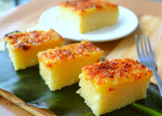

Casava Cake Recipe

Creamy & Chessy Cassava Cake
The delicious Cassava Cake.
Everyone's favorite!
Ingredients:
- 1/2 kilo Cassava Flesh
- 1/2 cup Water
- 3 Egg
- 1 can(390 grams) Condensed Milk and 400 grams Evap Milk
- 1/2 cup Coco Milk
- 1 spoonfli Sugar
- 1 pack 300 grams Cheese
- 1/2 cup Butter
Steps:
- First, set aside 90 grams of Condensed Milk, 100 grams of Evap Milk, and 200 grams of Cheese for toppings.
- Mix well all the remaining ingredients in a bowl.
- Put mixed ingredients in a butter greased cooking pan.
- Put the pan in 350 degrees hot Oven for 30 minutes.
- Mixed the set aside Condensed, Evap Milk, and Cheese in a bowl.
- After 30 minutes check-out the pan in the oven and filled it with the mixed toppings.
- Put it again in the Oven for another 15 minutes.
- That's it! Taste your Creamy and Chessy Cassava Cake.